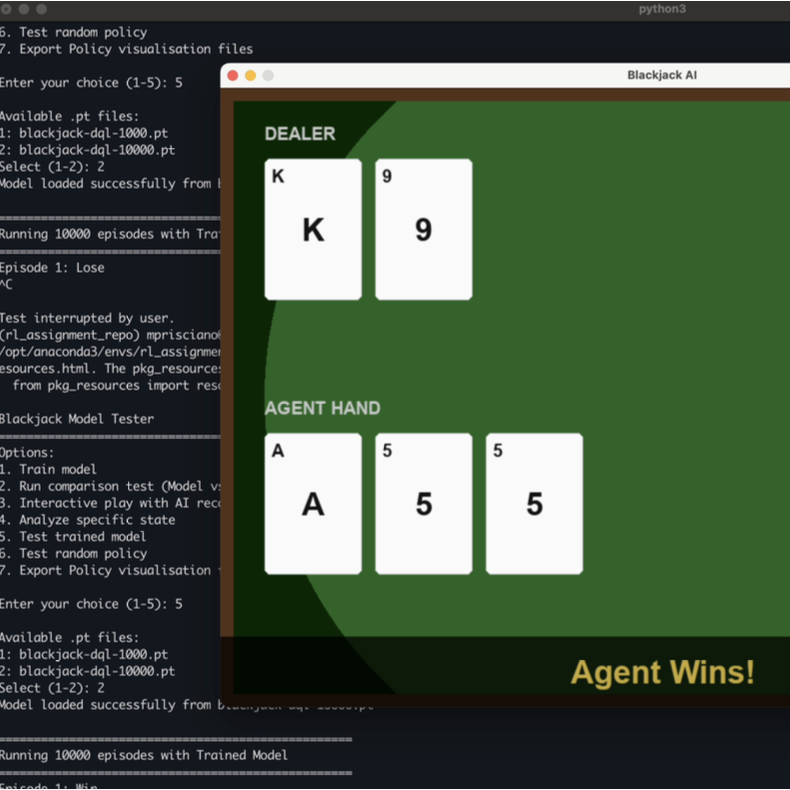
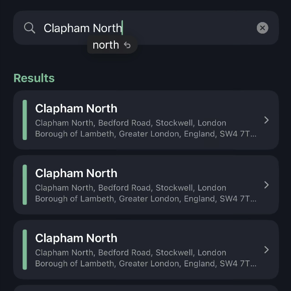
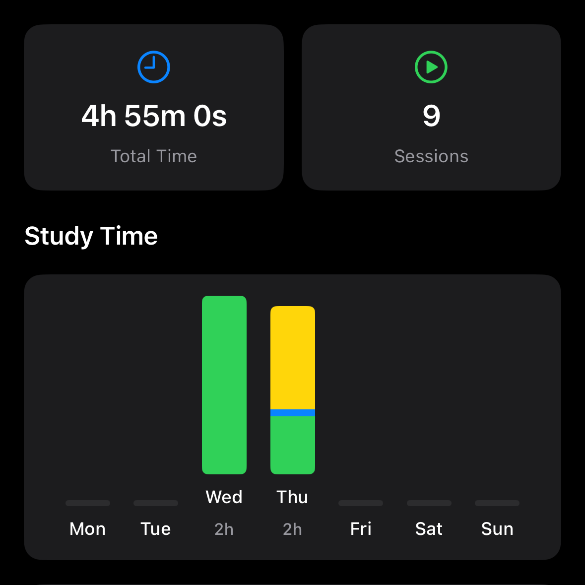

September 2025 - June 2028 (Expected)
University of Dundee
BSc (Hons) Computer Science
I enjoy building tools that make people's life easier.
BSc (Hons) Computer Science
Expedia Group • London, UK

Role: Contributor
This Year 2 team project focused on developing an autonomous agent who plays the popular card game "Blackjack". I was responsible for conducting the foundational research, designing the experiments to evaluate the agent performance and implementing the reinforcement learning method using Deep Q-Learning.
The project report can be accessed here.

Role: Core Developer
This is an iOS app that sends an alert when you're close to your destination. It was built around commuters on buses/Tube and it allows users to track their journey in the background and receive a heads-up in time to prepare for their stop.
This app is available on the App Store.

Role: Core Developer
A study tracking app for iOS devices built using SwiftUI that provides a clean and visual way to monitor learning habits while building consistency over time. This project served as a good introduction to iOS development and the Apple ecosystem in general.
This app is currently in beta testing and will be available soon on the App Store.
A collection of my personal notes from various modules.